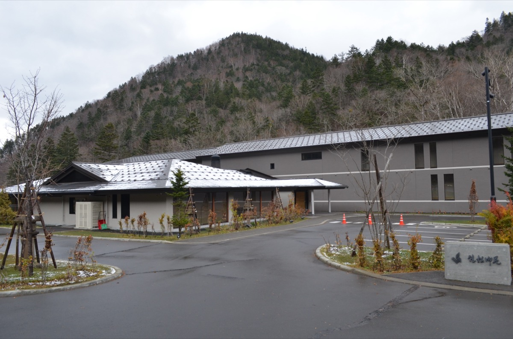
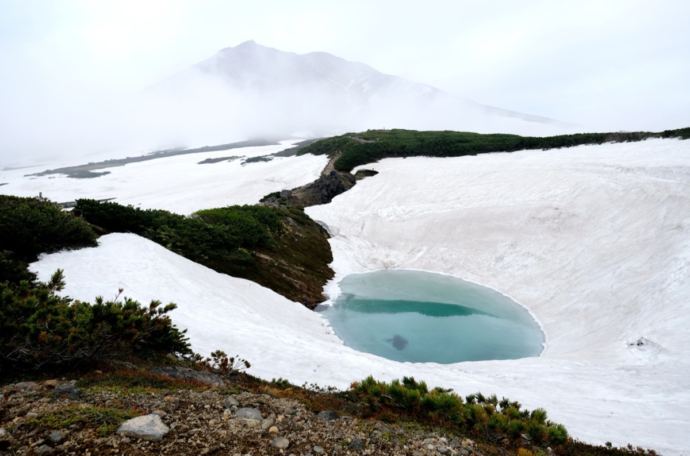
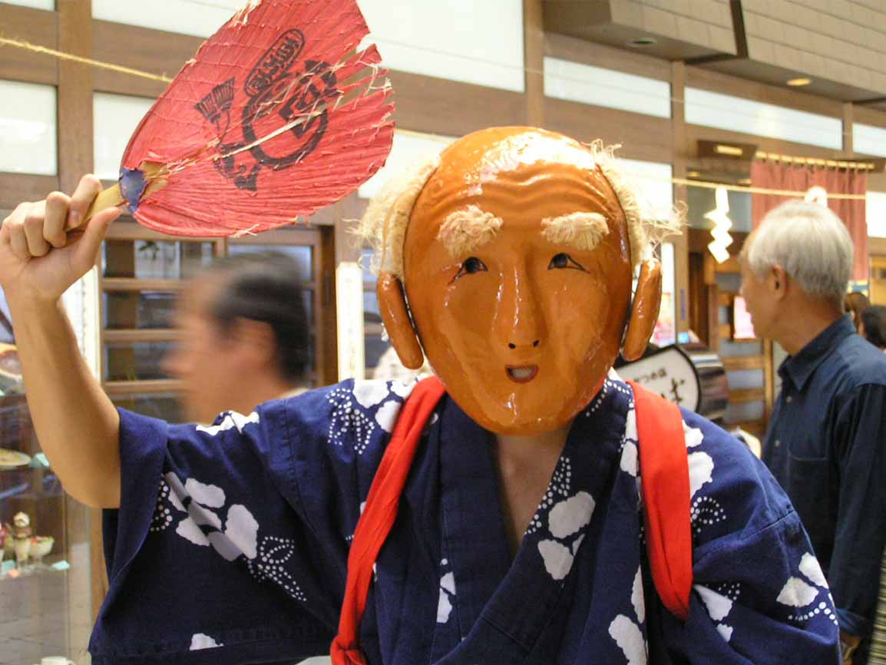
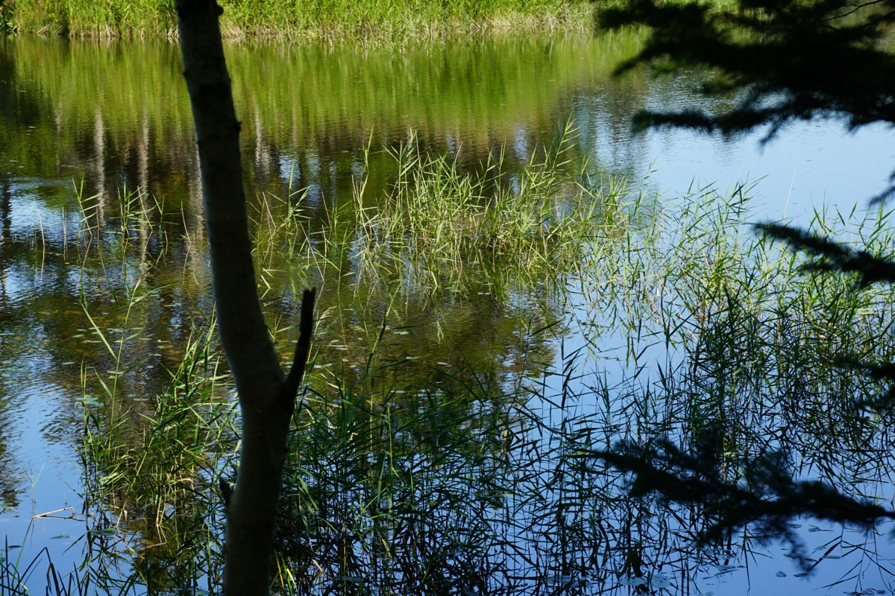
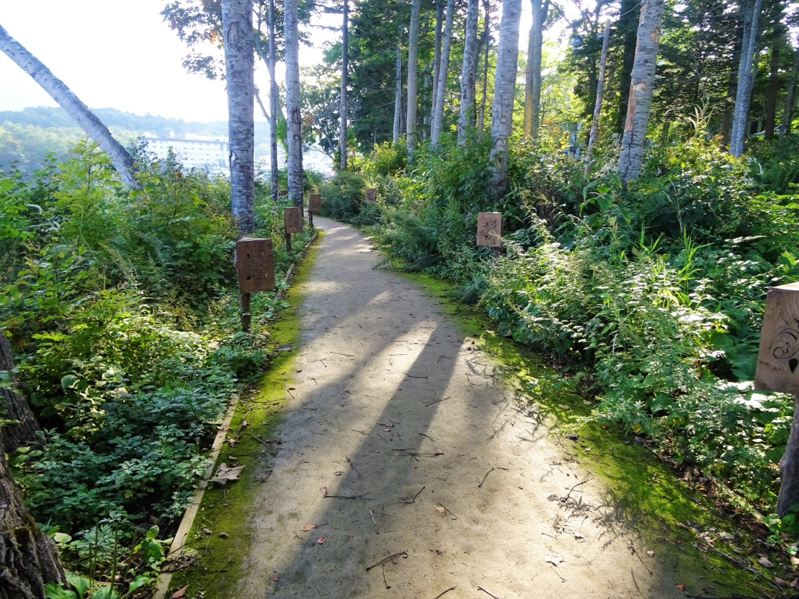
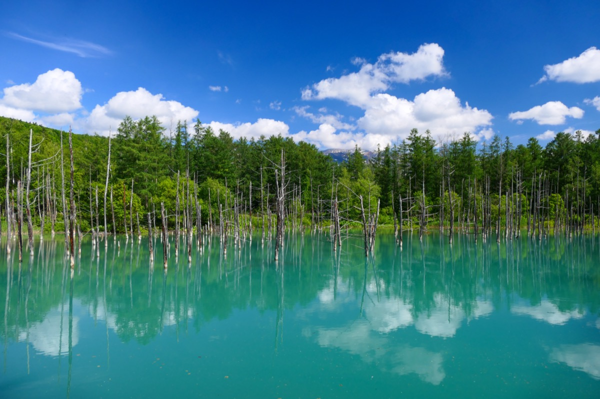
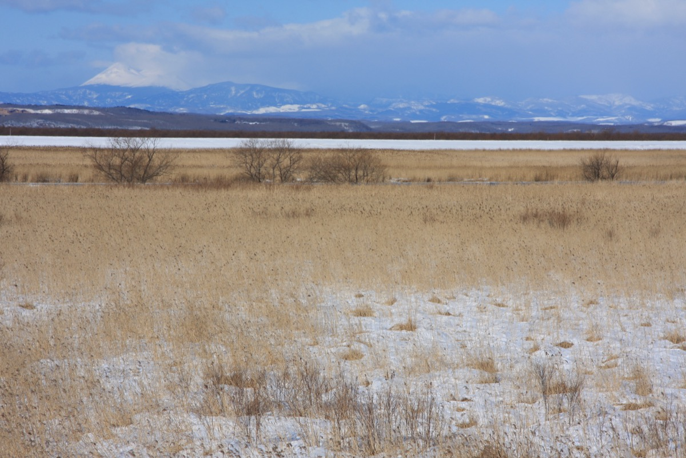
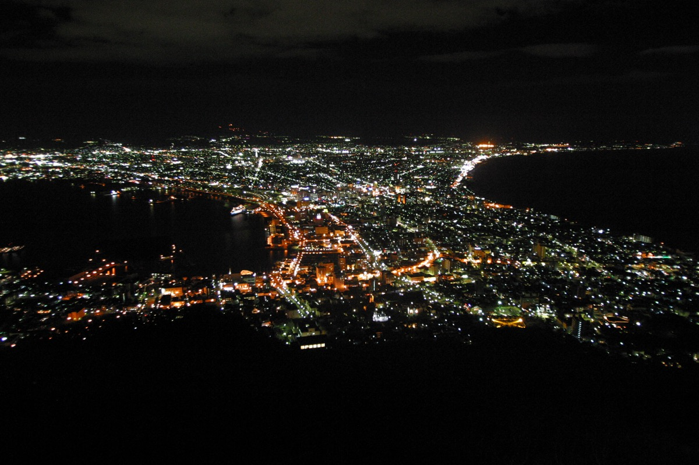
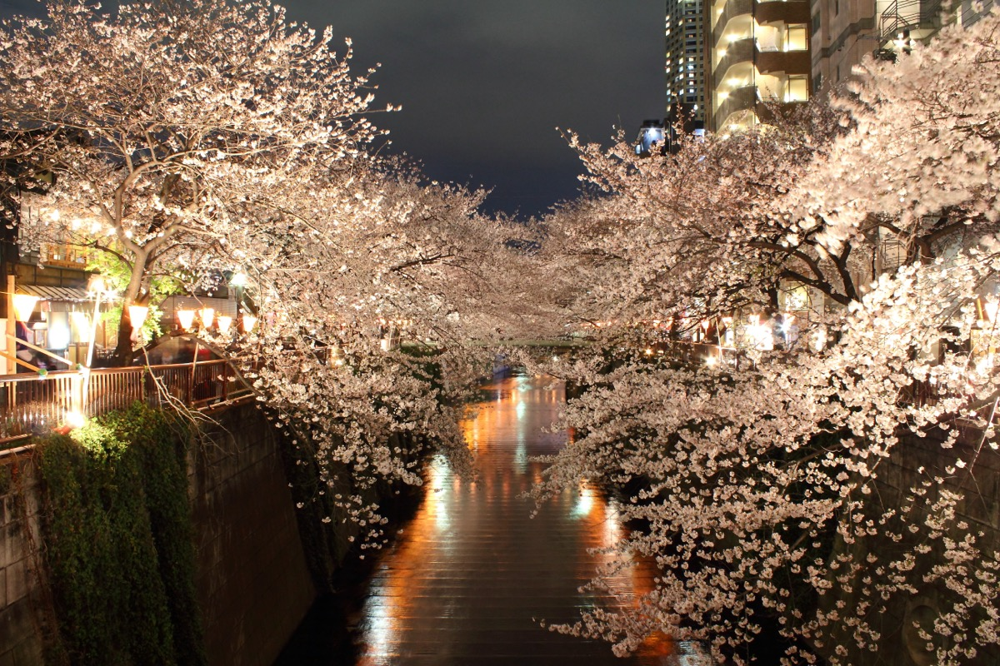

Trip at a Glance
14
Hokkaido Nights
2
Tokyo Nights
3
Ryokan Nights
Private onsen ★
9
Regions
~$590
Flights/Person
LAS→HND→CTS
24
Stamp Stops
📮 Eki + Parks + Attractions
5
Open Items
Before booking
Route
Destinations

Days 1–3
City
Sapporo
Hokkaido's cosmopolitan capital balances city energy with mountain proximity. Odori Park bisects the urban grid and transforms each summer into one of Japan's largest beer festival grounds. World-class ramen, dairy, and seafood at every turn.
🍜 Miso ramen birthplace
🍺 Beer Garden from Jul 18
🚃 40 min from CTS airport
Buy a stamp notebook (スタンプ帳) at a 100-yen store on Day 1 — you'll fill it fast.
Ramen Alley (Susukino) is steps from most hotels — perfect for an easy arrival dinner.

Day 3 (day trip)
Port Town
Otaru
A 35-minute train from Sapporo drops you into a beautifully preserved 1920s port town. Gas-lit canals, Meiji-era brick warehouses, glassblowing studios, and some of Hokkaido's freshest seafood make this the ideal first excursion.
🏛 Preserved canal district
🔮 Glassblowing & music boxes
🥃 Nikka Yoichi 30 min away
Visit Nikka Whisky Yoichi Distillery — free museum, free tastings, almost no tourists. Easily the best 2 hours near Otaru.
Grab Kita no Aisu soft serve near the canal before the train back — open since 1978, velvety Hokkaido milk ice cream.

Days 4–5
Lavender ★★
Furano & Biei
Mid-July is peak lavender season — Farm Tomita's purple rows against rolling hills is one of Japan's most iconic landscapes. Biei adds patchwork crop fields and the surreal cobalt Blue Pond, featured as an Apple OS X wallpaper.
🌸 Peak bloom mid-July
🔵 Biei Blue Pond
🚂 Norokko train option
Arrive at Farm Tomita before 9am — tour buses arrive at 10am and the crowds are relentless after that.
The Blue Pond shifts color with the light — early morning gives the most vivid cobalt blue.

Night 6
Private Ryokan ★
Jozankei Onsen
Hokkaido's largest hot spring resort, tucked in a mountain river gorge 50 minutes from Sapporo. A private ryokan here with your own outdoor rotenburo and a multi-course kaiseki dinner is the trip's first true luxury pause.
♨️ Private rotenburo
🍱 Kaiseki dinner
📍 50 min from Sapporo
Book Yurakusoan or Kasho Gyoen via IKYU.com 3–5 months ahead — private in-room baths sell out first.
Yurakusoan includes complimentary post-bath ramen for guests — surprisingly excellent and a great way to end the evening.

Day 7
Ramen + Zoo
Asahikawa
Hokkaido's second city is famous for its rich shoyu ramen with a distinctive lard float — a different style entirely from Sapporo's miso. Asahiyama Zoo's behavioral exhibits (penguins flying underwater, polar bears above your head) redefined zoo design worldwide.
🍜 Shoyu ramen capital
🦁 Asahiyama Zoo
🚪 Gateway to Daisetsuzan
Ramen Shishio is a 15-seat hidden dive that locals rate above the famous Ramen Mura tourist complex — seek it out.
The zoo is worth the morning stop — immersive, uncrowded by mid-summer, and genuinely world-class.

Days 8–9
National Park
Daisetsuzan & Sounkyo
Japan's largest national park (2,267 km²) of volcanic peaks and river gorges. Sounkyo's 100m columnar basalt cliffs and twin waterfalls are dramatic. Day 9 brings the ropeway up to Asahidake's alpine plateau — wildflowers above the treeline in late July.
🏔 Japan's largest NP
💧 Twin waterfalls
🌸 Alpine flowers peak late July
Don't skip the Asahidake Ropeway on Day 9 — the Sugatami Pond loop is a gentle 1–2hr walk at 1,600m with zero hiking experience required.
Sounkyo Visitor Center has one of Hokkaido's most striking national park stamps — basalt cliffs design.

Days 10–11
UNESCO ★★
Shiretoko Peninsula
Japan's wildest corner — a UNESCO World Heritage peninsula where brown bears outnumber tourists and the coastline is completely inaccessible by road. Five Lakes, Kamuiwakka Hot Falls (a river you can soak in), and a coastal wildlife cruise are three of the trip's most memorable experiences.
🐻 Brown bears in the wild
🌊 UNESCO coastline cruise
♨️ Hot river at Kamuiwakka
Book the coastal boat cruise in advance — it accesses sea cliffs and waterfalls unreachable by land, and seats fill in summer.
The Shiretoko World Heritage Conservation Center eki-stamp is the most sought-after in Hokkaido — don't miss it.

Night 12
Private Ryokan ★★
Lake Akan
A volcanic caldera lake home to marimo — perfectly spherical algae that are a Japanese natural monument. The Ainu Kotan village on the shore is the most authentic Indigenous cultural experience in Hokkaido, and the Hinanoza ryokan puts a private outdoor onsen on the lake's edge at your door.
🟢 Marimo algae spheres
🏮 Ainu cultural village
♨️ All suites private onsen
Akan Tsuruga Hinanoza sells out 5+ months ahead — set a reminder and book on IKYU.com the moment reservations open.
Stay for the Ainu evening fire dance performance in Ainu Kotan — it runs most nights in summer and is genuinely moving.

Day 13
Caldera Lakes
Akan-Mashu Lakes
A loop of three caldera lakes each with its own character — Lake Mashu (Japan's clearest, often fog-draped), Lake Kussharo (Japan's largest, with a beach where hot springs bubble up through the sand), and tiny Lake Onnetō, hidden and color-shifting at the base of Mt. Meakan.
🌫 Lake Mashu clarity record
♨️ Kussharo DIY beach onsen
🔵 Onnetō hidden gem
At Sunayu beach on Kussharo, just dig a hole — hot spring water fills it naturally. Bring a small towel and soak.
Lake Mashu Observation Deck #1 gives the best angle. Both clear and foggy days are stunning in completely different ways.

Day 14
Wetlands
Kushiro & Wetlands
Japan's largest marshland preserves critical habitat for the endangered tancho crane and Ezo sika deer. A canoe tour paddles the Kushiro River at water level through tall reeds — a completely different perspective from any land-based wildlife experience.
🦢 Tancho crane habitat
🛶 River canoe tours
🐟 DIY kaisendon at Washo
Washo Market's DIY kaisendon is one of Japan's most unique market experiences — arrive by 10am for the widest selection of toppings.
Kushiro Station's eki-stamp features the iconic tancho crane — one of the best-designed stamps on the route.

Day 14B ⚑ TBD
Decision Needed
Hakodate — TBD
A historic port city with Japan's third-best night view from Mt. Hakodate. The star-shaped Goryokaku Fort, Meiji-era consulate buildings in Motomachi, and one of Japan's most legendary 5am morning markets (live squid fishing + immediate preparation) make this a strong case for inclusion.
🌃 Top 3 night view in Japan
🌟 Goryokaku star fortress
🦑 5am morning market
If you include Hakodate, take the shinkansen to Tokyo (~4 hrs from Shin-Hakodate-Hokuto) — no flight needed, and it's a beautiful ride.
The 5am Asaichi Morning Market is worth setting an alarm for — it's uniquely atmospheric and has live squid you can catch yourself.

Days 15–16
Tokyo Finale
Tokyo
Two nights in the capital to decompress and eat well. Dinner at Cocon in Nakameguro — a 20-seat counter where a chef trained at Mirazur (3 Michelin stars) applies French technique to Japanese seasonal ingredients. Then a souvenir sweep through Asakusa, Ginza, and the Hokkaido Dosanko Plaza.
🍽 Cocon — book 2–4 wks ahead
⛩ Asakusa & Sensoji
🛍 Hokkaido Dosanko Plaza
Book Cocon via Pocket Concierge — it's closed Wednesdays, so confirm your night doesn't land on one. Counter seats go fast.
Hokkaido Dosanko Plaza (Yurakucho) stocks 1,200+ Hokkaido-exclusive products — go here for the best gifts and things you can't get at home.
Day-by-Day
Mon Jul 14
D1
Sapporo
✈️ Arrive Sapporo
Long travel day — take it easy
Transfer CTS → Sapporo (~40 min)
🍜 Ramen Yokocho dinner
📮 Sapporo Station eki-stamp
City Hotel
Royal Park Canvas
or Tokyu Stay Odori
~$150–156/night
Tue Jul 15
D2
Sapporo
🏙 Sapporo City Day
🐟 Nijo Market breakfast
🍫 Shiroi Koibito Park
🍫 ROYCE Chocolate Town
🍶 Chitosetsuru Sake Museum
🍺 Sapporo Beer Museum
🗿 Makomanai Cemetery (Moai + Buddha)
🍛 Soup Curry Garaku dinner
📮 Shiroi Koibito Park · Beer Museum
City Hotel
Sapporo
~$150–156/night
Wed Jul 16
D3
Otaru
⛵ Otaru Day Trip
Train from Sapporo (35 min)
🏛 Otaru Canal
🔮 Sakaimachi Street glassblowing
🦀 Seafood lunch
🥃 Nikka Yoichi Whisky Distillery
🍦 Kita no Aisu soft serve
📮 Otaru Station · Canal tourist info
City Hotel
Back to Sapporo
~$150–156/night
Thu Jul 17
D4
Furano
🌸 Drive to Furano
Rental car or Lavender Express train
🌷 Shikisai no Oka (Hill of Colors)
🍈 Hokkaido melon soft serve
Lavender in bloom ✅
📮 Furano Station · Shikisai no Oka
Hotel
Furano guesthouse
~$100–200/night
Fri Jul 18
D5
Furano / Biei
🌻 Peak Lavender Day ★★
7am: Farm Tomita (before crowds)
🌾 Lavender East (less crowded)
🛤 Biei Patchwork Road drive
🔵 Biei Blue Pond
🚂 Norokko train option
🎉 Sapporo Beer Fest opens today
📮 Farm Tomita (beloved!) · Biei Station
Hotel
Furano / Biei
~$100–200/night
Sat Jul 19
D6
Jozankei
♨️ Jozankei Ryokan Night ★
Morning: remaining Furano/Biei
🗿 Moerenuma Park (Isamu Noguchi)
Check in ~4pm — private rotenburo onsen
🍱 Kaiseki dinner
Optional: Sapporo Beer Garden tonight (~50 min)
Ryokan ★
Yurakusoan
or Kasho Gyoen
$370–850/night
Sun Jul 20
D7
Sapporo → Asahikawa
🍺 Beer Garden + Ramen
Ryokan breakfast + morning soak
🍺 Odori Park Beer Garden (12pm) ★
Drive to Asahikawa (1.5 hrs)
🍜 Asahikawa Ramen Mura (shoyu)
Ramen Shishio hidden gem
📮 Asahikawa Station · Asahiyama Zoo
City Hotel
Asahikawa
~$100–150/night
Mon Jul 21
D8
Daisetsuzan
🏔 Sounkyo Gorge
Optional: Asahiyama Zoo
Drive to Sounkyo (1.5 hrs)
🪨 Gorge walk — basalt cliffs
💧 Ryusei + Ginga waterfalls
🚡 Sounkyo Ropeway option
📮 Sounkyo Visitor Ctr (NP stamp) · Ropeway
Ryokan
Sounkyo Choyotei
or Hotel Taisetsu
$200–400/night
Tue Jul 22
D9
Daisetsuzan
🌸 Asahidake Ropeway + Alpine Flowers ★
Drive to Asahidake (1 hr)
🚡 Ropeway to 1,600m
🌿 Sugatami Pond loop (1–2 hrs, easy)
Alpine wildflowers in full bloom
Momijidani Trail in afternoon (optional)
📮 Asahidake Ropeway top station
Ryokan
Sounkyo (night 2)
$200–400/night
Wed Jul 23
D10
Shiretoko
🦅 Drive to Shiretoko (UNESCO)
Long drive — 3–3.5 hrs
💧 Furepe Falls ("Tears of a Maiden") on arrival
🦞 Fresh seafood dinner in Utoro
📮 Shiretoko World Heritage Ctr (UNESCO stamp)
Hotel
Utoro, Shiretoko
~$150–250/night
Thu Jul 24
D11
Shiretoko
🐻 Shiretoko Full Day ★★
🏞 Five Lakes boardwalk (easy, 800m)
🌊 Kamuiwakka Hot Falls — soak in a river ★
🚢 Coastal wildlife cruise (sea eagles, bears, seals)
🦞 Uni + crab dinner
📮 Shiretoko Five Lakes visitor center
Hotel
Utoro (night 2)
~$150–250/night
Fri Jul 25
D12
Lake Akan
🏮 Shiretoko → Lake Akan Ryokan ★★
Shiretoko Pass scenic mountain drive
🏮 Ainu Kotan village — cultural performances ★
🟢 Marimo aquarium (rare spherical algae)
♨️ Private outdoor onsen on the lake
🍱 Kaiseki dinner
📮 Akan-Mashu NP visitor center
Ryokan ★★
Akan Tsuruga Hinanoza
$400–600/night
Sat Jul 26
D13
Akan-Mashu → Kushiro
🌊 Caldera Lakes Loop
Ryokan breakfast + morning onsen
🌫 Lake Mashu — Japan's clearest lake
♨️ Lake Kussharo / Sunayu — DIY beach onsen ★
🔵 Lake Onnetō — hidden color-shifting gem
Drive to Kushiro (~1.5 hrs)
📮 Lake Mashu Obs. Deck · Lake Kussharo
City Hotel
Kushiro
~$100–150/night
Sun Jul 27
D14
Kushiro
🦢 Kushiro Wetlands + Market ★
🛶 Wetlands canoe tour (cranes, deer)
🍚 Washo Market — DIY kaisendon ★
⚑ DECISION: Hakodate (Option A) or fly to Tokyo early (Option B)
📮 Kushiro Wetlands NP · Kushiro Station (crane design)
TBD
Hakodate hotel
OR Tokyo hotel
Mon Jul 28
D14B
Hakodate (TBD)
⚑ Optional: Hakodate Day
5am: Asaichi Morning Market ★
🌟 Fort Goryokaku (star fortress)
🏛 Motomachi historic district
🎡 Hakodate Park Ferris Wheel (oldest in Japan)
🌃 Mt. Hakodate night view ★★
Shinkansen to Tokyo (~4 hrs)
📮 Hakodate Station · Goryokaku Tower
TBD
Decision pending
research needed
Mon/Tue Jul 28/29
D15
Tokyo
🌆 Arrive Tokyo · Dinner at Cocon ★★
Fly CTS→HND (1h45) OR shinkansen from Hakodate
🛍 Hokkaido Dosanko Plaza (Yurakucho)
🍽 Cocon — Nakameguro (book Pocket Concierge)
French + Australian + Japanese · Natural wine
~¥15,000–20,000/person with wine
Hotel
Nakameguro / Ginza
or Shibuya
~$150–300/night
Tue/Wed Jul 29/30
D16
Tokyo
🛍 Tokyo Souvenir Day
⛩ Asakusa — Nakamise-dori, traditional gifts
💎 Ginza Six food hall
🏬 Ginza Mitsukoshi
🧴 Shiseido Parlour (exclusive Hanatsubaki biscuit tin)
🛒 Tokyu Hands or Don Quijote (last-minute)
📮 Sensoji goshuin (¥300) · Tokyo Station eki-stamp
Hotel
Tokyo (last night)
~$150–300/night
Wed/Thu Jul 30+
D17
Fly Home
✈️ Tokyo → Las Vegas
HND or NRT → LAS
Tokyo Station Gransta for last-minute souvenirs
HND: Monorail from Hamamatsucho (20 min)
NRT: N'EX from Tokyo Station (60 min)
Travel Day
Open Items — Before Booking
Hakodate Decision
Day 14 is a pivot point. If included, best exit is shinkansen → Tokyo. If skipped, fly CTS → HND for a slower Tokyo finish.
Book Ryokan — IKYU.com (3–5 months ahead)
Night 6: Yurakusoan ($370–580) or Kasho Gyoen ($580–850) — Jozankei. Night 12: Akan Tsuruga Hinanoza ($400–600) — Lake Akan.
Rental Car — Eastern Hokkaido (Days 8–13)
Pick up Asahikawa or Sounkyo, drop off Kushiro. Book 3+ months ahead — summer demand is high.
Cocon Reservation — Pocket Concierge (2–4 weeks ahead)
Nakameguro, Tokyo. Closed Wednesdays. ~¥11,000/person food; ~¥15,000–20,000+ with natural wine pairing.
Shiretoko Goko Ground Trails — Confirm Bear Season
Guided requirement typically lifts mid-July. For a Jul 24 visit, solo hiking should be open — confirm closer to the trip.
Festival & Timing
✓
🌸 Lavender Peak — Farm Tomita, Biei
Mid-July – Early August
✅ Days 4–5 (Jul 17–18) — perfect timing
✓
🍺 Sapporo Summer Festival Beer Garden
July 18 – August 13
✅ Day 7 (Jul 20) — midday stop en route to Asahikawa
✓
🌼 Alpine Wildflowers — Asahidake
Late July
✅ Day 9 (Jul 22) — ropeway + Sugatami Pond hike
✗
⛩ Otaru Ushio Festival
July 25–27
❌ In eastern Hokkaido on those dates
✗
🎭 Hokkai Heso Matsuri (Belly Button Fest)
July 28–29 (Furano)
❌ In Tokyo by then
Flights
Outbound
LAS → LAX → HND → CTS
American (JAL) + ANA domestic · 13h 46m + 1h 45m
~$590/pp
Domestic
CTS → HND
ANA or JAL · 1h 45m
~$77–150
Return
HND (or NRT) → LAS
ANA / JAL / American · via connecting hub
TBD
💡 Search as two one-ways (open-jaw: fly into CTS, out of HND) for better pricing.
If Hakodate is included, shinkansen to Tokyo skips the CTS→HND flight.
Accommodations
Nights
1–3
1–3
Royal Park Canvas or Tokyu Stay Sapporo Odori
Sapporo · City hotel
$150–156 / night
Nights
4–5
4–5
Local guesthouse / hotel
Furano / Biei
$100–200 / night
Night
6
6
♨️ Yurakusoan or Okujozankei Kasho Gyoen
Jozankei Onsen · Private rotenburo · Kaiseki dinner · Book IKYU.com
$370–850 / night
Night
7
7
City hotel
Asahikawa
$100–150 / night
Nights
8–9
8–9
Sounkyo Choyotei or Hotel Taisetsu
Sounkyo Onsen · Daisetsuzan National Park · Gorge views
$200–400 / night
Nights
10–11
10–11
Local hotel
Utoro, Shiretoko Peninsula
$150–250 / night
Night
12
12
♨️ Akan Tsuruga Bessou Hinanoza
Lake Akan · All 25 suites have private outdoor onsen · Michelin recommended · Book IKYU.com
$400–600 / night
Night
13
13
City hotel
Kushiro
$100–150 / night
Night
14
14
Hakodate hotel OR Tokyo early arrival
⚑ Hakodate decision required
$150–250 / night
Nights
15–16
15–16
Hotel — Nakameguro, Ginza, or Shibuya
Tokyo · Near Cocon restaurant (Nakameguro) + shopping
$150–300 / night
📮 Stamp Collecting — 24 Stops
Eki JR station — free, ask at ticket counter (みどりの窓口)
NP National park visitor center — free
Attraction Tourist site — free
Goshuin Temple calligraphy — ¥300, requires goshuin-cho notebook
💡 Tip: Buy a blank stamp notebook (スタンプ帳) at a 100-yen store or souvenir shop in Sapporo on Day 1 — pages fill fast. Thick paper works better; stamps can bleed through thin pages.
D1
Sapporo Station
Eki One of Hokkaido's most detailed designs
D2
Shiroi Koibito Park
Attraction At the park entrance
D2
Sapporo Beer Museum
Attraction At the info desk
D3
Otaru Station
Eki Classic Otaru design
D3
Otaru Canal Tourist Info
Attraction Near the canal
D4
Furano Station
Eki
D4
Shikisai no Oka
Attraction At the main building
D5
Farm Tomita
Attraction Ask at gift shop
★ Most beloved stamp stop in Hokkaido — decades-old tradition
D5
Biei Station
Eki One of the prettiest designs in the region
D7
Asahikawa Station
Eki Major Hokkaido hub
D7
Asahiyama Zoo
Attraction At the entrance gate
D8
Sounkyo Visitor Center
NP Daisetsuzan National Park — basalt cliffs design
★ One of the most striking NP stamps in Hokkaido
D8
Sounkyo Ropeway Station
Attraction
D9
Asahidake Ropeway (Top)
Attraction Sugatami Station — volcanic peak design
D10
Shiretoko World Heritage Center
NP UNESCO stamp — Utoro
★ Most sought-after stamp in Hokkaido
D11
Shiretoko Five Lakes
NP Trailhead visitor building
D12
Akan-Mashu NP Visitor Center
NP Akanko Eco-Museum Center
D13
Lake Mashu Obs. Deck #1
Attraction At the visitor building
D13
Lake Kussharo / Sunayu
Attraction At the Sunayu rest house
D14
Kushiro Wetlands (Hosooka)
NP Kushiro-Shitsugen National Park
D14
Kushiro Station
Eki Iconic tancho crane design
D14B
Hakodate Station (if visiting)
Eki
D14B
Goryokaku Tower (if visiting)
Attraction At the observation desk
D16
Sensoji Temple, Asakusa
Goshuin ¥300 — requires goshuin-cho notebook (sold at temple)
Great place to start a goshuin collection if you don't have one
D16
Tokyo Station
Eki Red-brick station facade design